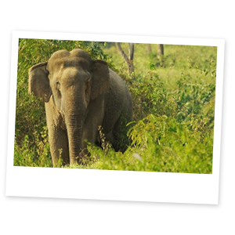

Национальный парк Куйбури
Экскурсия в национальный парк Куйбури - это уникальная возможность увидеть в дикой природе слонов и гауров (крупнейший представитель рода настоящих быков)
 На территории заповедника живет самая большая популяция гауров в Таиланде, около 100 особей и примерно 320 слонов. Профессиональные рейнджеры провезут по территории заповедника и с вероятностью 99% Вы сможете увидеть и тех и других. Также здесь водятся золотые шакалы, леопарды, олени, бантенги (другие представители рода настоящих быков).
Национальный парк Куи-Бури, созданный в 1999 году, расположен на холмах Тенассерим в провинции Прачуап-Кхири-Кхан. Территория покрыта сухим и влажным вечнозеленым лесом с такими деревьями, как Dipterocarpus tuberculatus, Hopea odorata, Terminalia chebula и различными видами пальм.
Рекомендации по одежде:
Удобная одежда.

2600 Бат
Выезд - 9:00
3000 Бат
Возвращение - 16:00
3500 Бат
*Стоимость указана за человека
**Дети до 3 лет - бесплатно, без предоставления отдельного места в транспорте
***Дети от 3 до 10 лет - 1800 Бат
Маршрут:
Комфортабельный трансфер до национального парка, дальше пересаживаемся на пикап рейнджеров и катаемся по территории заповедника
В стоимость включено:
Трансфер, русскоговоряший гид, входные билеты
Дополнительные расходы:
Обед, личные расходы, чаевые.